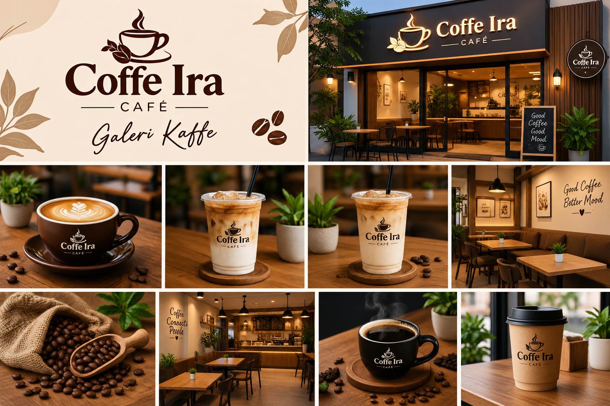
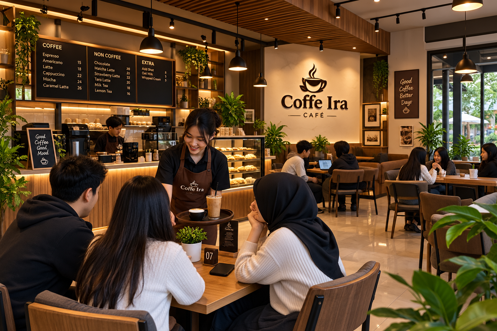
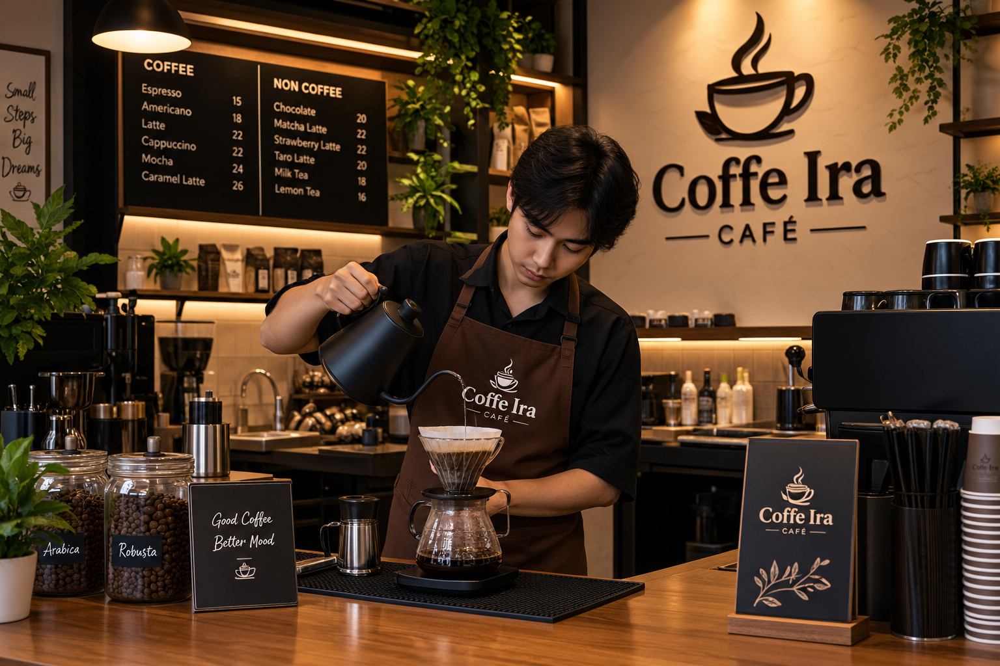
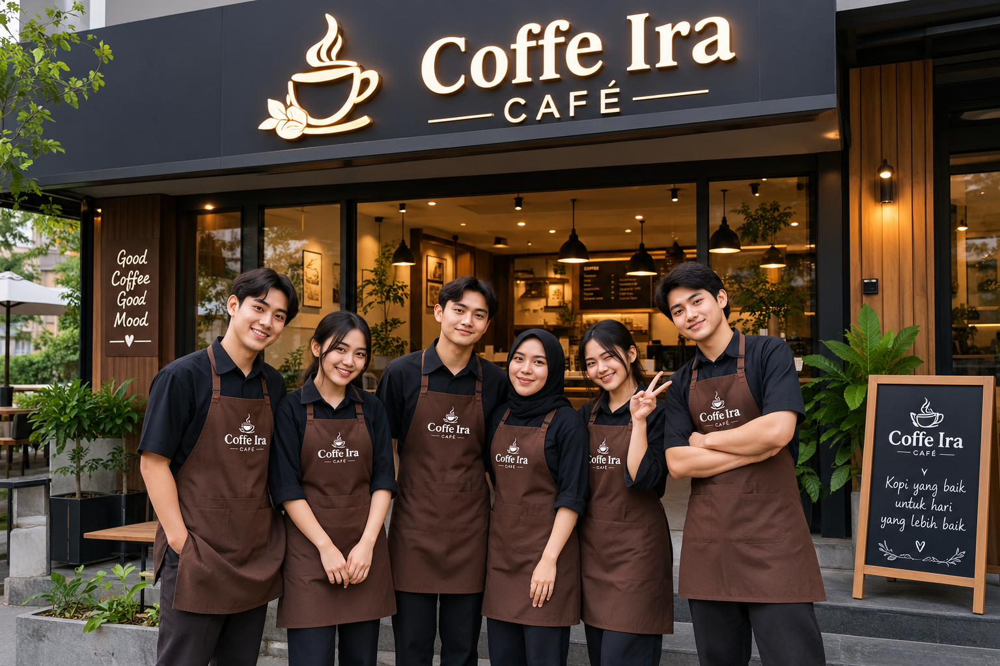

UMKM Pekalongan
Galeri Coffee ira
Sekilas tentang Coffee Ira, tempat bertemunya cita rasa, suasana nyaman, dan kisah di balik setiap cangkir.

Foto Produk
Beberapa foto dari biji kopi berkualitas Coffee ira.


Suasana Kedai


Tim Kami
Orang-orang yang menyapa kamu setiap hari.


Tempat Terhangat - Single by. Coffee ira
Versi full akan diputar tiap satu jam sekali di Coffee ira.